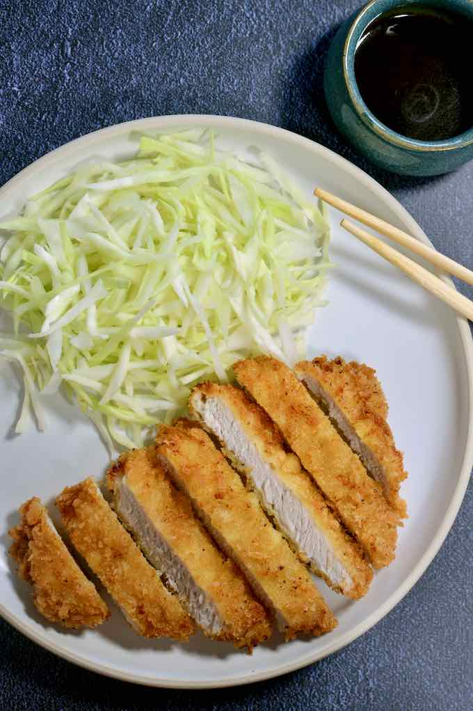

Tonkatsu

Description
Crispy out the outside, tender on the inside, and accompanied by refreshing raw cabbage and tangy tonkatsu
sauce,
this simple, but comforting dish is perfect for any occasion.
Ingredients
- 1 lb pork tenderloin or center cut boneless pork chops
- 1/4 cup flour
- 1 Egg, whipped (add additional egg if needed)
- 1 - 2 cups panko or breadcrumbs
- Salt and pepper
- Oil for frying
Steps
- Cut and, if necessary, pound pork into desired thickness, between a half and three quarters of an inch
thick.
- Place flour, whipped egg, and panko into three separate bowls. Into the flour, liberally mix in salt and
pepper.
- Dredge each piece of pork in flour, then coat in the whipped egg, and lastly cover with panko, gently
pressing the breadcrumbs into the wet egg to adhere.
- Heat a pan with oil on medium high. Fry the breaded pork until golden brown on both sides, and the pork
is
cooked through. Alternatively, deep fry the pork in a deep frier. Remove from the oil and place on a
paper
towel lined plate.
Serve with rice, thinly sliced shredded cabbage, miso soup, and tonkatsu sauce.
Itadakimasu!